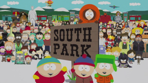

A South Parkról
A South Park 1997-ben indult amerikai televíziós 2D-s számítógépes animációs sorozat, amely Trey Parker és Matt Stone közreműködésével készül. A tévéfilmsorozat a Braniff Productions és a South Park Digital Studios gyártásában készült, a Debmar-Mercury, a Lionsgate Television és a 20th Television forgalmazásában jelent meg. Műfaját tekintve szituációs komédiasorozat. A sorozat négy alsó tagozatos fiú (Stan Marsh, Kyle Broflovski, Eric Cartman és Kenny McCormick) és családtagjaik, valamint a többi városi lakos szürreális kalandjait mutatja be, akik a coloradói South Park kisvárosban élnek. A felnőtt nézőknek szánt műsor elsősorban szatirikus és trágár hangvételéről, illetve a napi események, valamint a popkultúra és az amerikai közélet szereplőinek gyakori kifigurázásáról vált hírhedtté. A sorozatot két rövidfilm előzte meg, 1992-ben és 1995-ben; a South Parkot Amerikában 1997 óta sugározzák, a Comedy Central csatorna legnézettebb és a legrégebben képernyőn futó műsorának számít, emellett a csatorna második legrégebben óta futó sorozata a The Daily Show mellett.[1] ezidáig 309 epizódot ért meg. Parker és Stone a kezdetek óta is maga végzi a forgatókönyvírást, a rendezés és a szinkronizálás feladatának nagy részét, az alkotókat 2022-ig köti a szerződés az új epizódok elkészítésére. A sorozat alkotógárdája számítógépes programok felhasználásával készíti az animációkat, de megőrizték az eredeti rajzfilm leegyszerűsített, papírból kivágott figurákra emlékeztető megjelenését.
A kezdetek
Nem sokkal azután, hogy 1992-ben Trey Parker és Matt Stone megismerte egymást a Coloradói egyetemen, elkészítették a The Spirit of Christmas című rövidfilmet. A művet papírból kivágott alakokkal, stop motion technikával alkották meg és szerepelnek benne a későbbi South Park főszereplőinek korai változatai. Megfigyelhető egy Eric Cartmanre emlékeztető, Kenny nevű fiú, egy névtelen szereplő, aki Kenny McCormickra hasonlít és két, majdnem teljesen egyforma szereplő, akik nagyjából megegyeznek Stan Marshsal és Kyle Broflovskival. Brian Graden, a Fox TV-hálózat vezetője és az alkotók közös barátja megbízta Parkert és Stone-t egy második animáció elkészítésével, melyet karácsonyi üdvözlőlapként kívánt felhasználni. Az 1995-ös rövidfilm már jobban hasonlított a későbbi sorozat animációs stílusára, mint elődje.Hogy a két azonos nevű rövidfilmet megkülönböztessék egymástól, az elsőre gyakran Jesus vs. Frosty, míg a másodikra Jesus vs. Santa néven utalnak. Graden a rövidfilmről másolatokat küldött barátainak, amely így az interneten is megjelent és az egyik legelső interneten megosztott videó lett. Amikor a Jesus vs. Santa egyre népszerűbbé vált, Parker és Stone tárgyalni kezdett a rövidfilm sorozattá bővítéséről. A Fox vezetősége elutasította ezt az ötletet, mert nem akartak olyan műsort sugározni, melyben szerepel Kula bácsi, egy beszélő ürülék. Az alkotópáros ezután az MTV-vel és a Comedy Centrallal is egyezkedni kezdett, de Parker inkább a Comedy Central felé hajlott, mert félt, hogy az MTV esetleg gyermekműsorrá változtatná a sorozatot. Miután Doug Hertzog, a Comedy Central igazgatója megnézte a rövidfilmet, beleegyezett a sorozat elkészítésébe. Parker és Stone egy kisebb alkotógárda segítségével három hónap alatt elkészítette a pilótafilmet, Cartman anális beültetése (Cartman Gets an Anal Probe) címmel. A South Park már az első sugárzás előtt veszélybe került, mert az epizód a próbavetítéseken rosszul teljesített, különösen a nők körében. A rövidfilmek azonban még mindig sikeresek voltak az interneten, ezért a Comedy Central vezetősége megrendelt hat epizódot. A sorozat 1997. augusztus 13-án debütált a Comedy Centralon.
Epizódok
Amerikában a sorozat 1997. augusztus 13-án debütált. 2019. szeptember 12-én a készítők meghosszabbították a szerződést a Comedy Centrallal, ezekkel együtt összesen 26 évad lesz, és a sorozat legalább 2022-ig folytatódni fog. Az alkotók és a Comedy Central 2013 januárjában bejelentették, hogy a 17. évadtól kezdve csökkentik az epizódszámokat. Vagyis a szokásos 14 epizód helyett, csak 10-et fognak elkészíteni, és ezek szünet nélkül kerülnek majd adásba. Egy 2007. augusztus végén kötött megállapodás értelmében Trey Parker és Matt Stone a sorozat résztulajdonosa lett, és az epizódok ingyenesen hozzáférhetővé váltak, interneten és mobiltelefonon egyaránt. 2020 júniusától az HBO Maxon szintén elérhetővé válnak a South Park eddigi részei. Elérhető lesz az eddigi 23 évad, illetve a még biztosan készülő epizódok is ott lesznek láthatók, egy nappal az után, hogy debütáltak a Comedy Centralon. 2020 szeptemberében érkezik az első 1 órás epizódos különkiadás, amely külön a világjárványra koncentrál. 2021 márciusában érkezik az újabb 1 órás különkiadás, amely South Park lakosai még mindig a járvánnyal küzdenek, de már érkezik a vírus ellenszere. (elvileg ez a speciál nem tartozik a 24.évadhoz, így maga az új évad premierje hivatalosan még nincs bejelentve.) 2021-ben újabb speciál kerül vetítésre ezúttal a járvány védőoltására fókuszál. A korábbi és a legutóbbi évadokat összevetve megfigyelhető, hogy a korai epizódokban a helyzetkomikum és a Monty Python társulatát idéző humor volt túlsúlyban. Habár a szatíra, a hírességek parodizálása és a társadalomkritika már a sorozat kezdete óta jelen van az egyes történetekben, igazán csak a későbbi évadokban vált meghatározóvá; a készítők ekkor kezdtek el aktuális eseményekre reagálni és olyan témákat feldolgozni, mint például a vallás, a terrorizmus, vagy a különféle társadalmi problémák (illegális bevándorlás, környezetvédelem). Később egyre többször került szóba a televízió. Egy-egy epizód egésze vagy részletei gyakran utalnak egy adott híres filmre, sorozatra, kiparodizálva azt. Sőt, egyes filmsorozatokra több epizódban is utalnak. Ilyen például a Star Trek (Vackor néni busza), a Star Wars (Séf bácsi visszatérése), a Family Guy (Rajzfilmek háborúja 1-2., Kanada sztrájkol), a Knight Rider (A kísértethal, Dekoltázsőrnagy). További jellegzetesség, hogy a négy (később Butters-szel kiegészülve öt) főszereplő közül gyakran csupán egyről vagy kettőről szól a történet, a többiek szinte egyáltalán nem tűnnek fel az epizódban (például a Stanley kupája vagy a Fantasztikus Húsvéti Különkiadás című részekben). Sőt, egyre többször előfordul, hogy egy korábbi mellékszereplő (igen gyakran Stan apja, Randy Marsh) áll az események középpontjában (például a Bloody Mary vagy a Jesse Jackson segedelmével című epizódokban). Ugyanakkor számos, korábban sűrűn szerepeltetett karakter a háttérbe szorult és szinte már alig látható a sorozatban (például Jimbo, Ned Gerblansky, Dr. Mephisto vagy Barbrady felügyelő). South Parkban (pár kivétellel, például A nyár egy szívás) szinte minden epizódban tél van, a szereplők öltözete is ehhez igazodik. Magyarországon – négy évad erejéig – az HBO sugározta a sorozatot: magyar szinkronnal, illetve eredeti nyelven, magyar felirattal egyaránt. 2004-től a Cool TV, 2007-től pedig a magyar MTV vetíteni kezdte a South Parkot. A sorozat különkiadását 2021. március 10-.én kezdi el vetíteni, a Comedy Central, egyelőre felirattal, április 10-én pedig már szinkronosan.